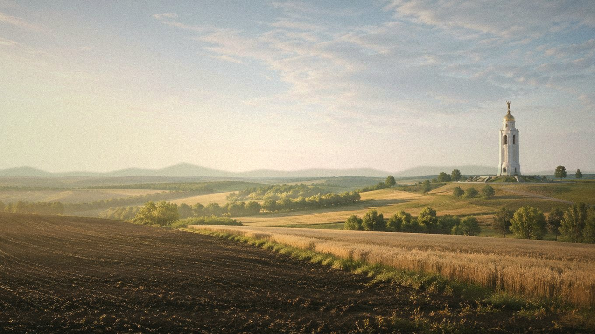

Главная / Тульская область / южная лесостепь

Тульская область · юг
Что посадить
Что посадить
в южной лесостепи
Юг Тульской области быстрее прогревается и ближе к лесостепному режиму. Здесь можно шире использовать теплолюбивые культуры, но на открытых местах требуются полив, мульча и защита молодых посадок от ветра.
Культуры и рекомендации
По умолчанию культуры отсортированы по надёжности: сначала надёжные, затем рекомендованные, с укрытием и рискованные. Сроки ориентировочные — их стоит уточнять по погоде конкретного сезона.
| Культура | Категория | Рекомендация | Где лучше | Сроки | Комментарий |
|---|---|---|---|---|---|
| Вишняплодовое дерево | Плодовые | Надёжно | Защищённый сад | Посадка: апрель или сентябрь. | Хорошо растёт на тёплом солнечном месте без застоя холодного воздуха. |
| Гороховощная бобовая культура | Овощи | Надёжно | Открытый грунт | Посев: конец апреля — май. | Ранний посев помогает уйти от летней жары. |
| Кабачоктыквенная культура | Овощи | Надёжно | Открытый грунт | Посев или высадка: конец мая — начало июня. | Уверенно растёт после конца мая, при засухе нужен полив. |
| Капуста белокочаннаяовощная культура | Овощи | Надёжно | Открытый грунт | Рассада: апрель; высадка: май. | Урожайна на плодородной гряде, но требует влаги в июле. |
| Картофельовощная культура | Овощи | Надёжно | Открытый грунт | Посадка: май; уборка: август–сентябрь. | Стабилен при посадке в мае; в сухой год важен полив во время бутонизации. |
| Лук репчатыйовощная культура | Овощи | Надёжно | Открытый грунт | Севок: конец апреля — май; уборка: август. | Хорошо вызревает на открытом солнечном участке. |
| Малинаягодный кустарник | Ягодные | Надёжно | Сад | Посадка: апрель или сентябрь. | Лучше держит урожай под мульчей и при поливе после цветения. |
| Морковькорнеплод | Овощи | Надёжно | Открытый грунт | Посев: конец апреля — май. | Посевы важно держать влажными до всходов. |
| Огурецтеплолюбивый овощ | Овощи | Надёжно | Открытый грунт / укрытие | Рассада: май; высадка: конец мая — июнь. | На тёплой гряде удаётся стабильно, особенно с поливом тёплой водой. |
| Свёклакорнеплод | Овощи | Надёжно | Открытый грунт | Посев: май, после прогрева почвы. | Хорошо переносит тепло и даёт качественные корнеплоды при прореживании. |
| Томаттеплолюбивый овощ | Овощи | Надёжно | Открытый грунт / укрытие | Рассада: март; высадка: конец мая — начало июня. | Ранние сорта в открытом грунте обычно успевают, укрытие ускоряет старт. |
| Тыкватыквенная культура | Овощи | Надёжно | Тёплая гряда | Рассада или посев: конец мая — начало июня. | Южная зона лучше подходит для ранних тыкв на компостной гряде. |
| Укроппряная зелень | Зелень | Надёжно | Открытый грунт | Посев: апрель–июль, с повторениями. | Весенние и позднелетние посевы дают лучшую зелень. |
| Яблоняплодовое дерево | Плодовые | Надёжно | Сад | Посадка: апрель или сентябрь. | Надёжная основа сада, молодые деревья поливают в сухие недели. |
| Алычаплодовое дерево | Плодовые | Рекомендовано | Защищённый сад | Посадка: апрель или сентябрь. | Зимостойкие формы можно сажать на тёплом месте. |
| Грушаплодовое дерево | Плодовые | Рекомендовано | Защищённый сад | Посадка: апрель или сентябрь. | Лучше выбирать зимостойкие сорта и защищённый участок. |
| Земляника садоваяягодная культура | Ягодные | Рекомендовано | Садовая гряда | Посадка: май или август. | На мульчированной гряде даёт стабильный урожай при поливе. |
| Кукуруза сахарнаяовощная культура | Овощи | Рекомендовано | Солнечный участок | Посев: май; уборка: август. | В тёплое лето хорошо вызревает на солнечном участке. |
| Перец сладкийтеплолюбивый овощ | Овощи | Рекомендовано | Теплица или тёплая гряда | Рассада: февраль–март; высадка: конец мая. | Возможен под дугами или в лёгкой теплице, открытый грунт менее стабилен. |
| Сливаплодовое дерево | Плодовые | Рекомендовано | Сад | Посадка: апрель или сентябрь. | Нужны зимостойкие сорта и дренированное место. |
| Фасоль кустоваяовощная бобовая культура | Овощи | Рекомендовано | Открытый грунт | Посев: конец мая — начало июня. | Сеять после прогрева почвы, избегая холодных майских ночей. |
| Базиликпряная зелень | Зелень | С укрытием / уходом | Тёплая гряда или теплица | Рассада: апрель; высадка: конец мая — июнь. | Любит тепло, поэтому лучше тёплая гряда или теплица. |
| Баклажантеплолюбивый овощ | Овощи | С укрытием / уходом | Теплица | Рассада: февраль–март; высадка: конец мая. | Лучше в теплице: открытый грунт зависит от тёплого лета. |
| Виноград укрывнойягодная лиана | Ягодные | С укрытием / уходом | Южный склон под укрытием | Посадка: май; укрытие лозы — октябрь. | Ранние сорта возможны у южной стены с обязательным укрытием на зиму. |
| Дынябахчевая культура | Бахчевые | С укрытием / уходом | Тёплая гряда под укрытием | Рассада: апрель; высадка: конец мая — июнь. | Пробовать только ранние сорта на сухой тёплой гряде под укрытием. |
| Абрикосплодовое дерево | Плодовые | Рискованно | Экспериментальный сад | Посадка: весна; цветение требует защиты от заморозков. | Даже на юге цветки часто повреждаются весенним холодом. |
| Арбузбахчевая культура | Бахчевые | Рискованно | Тёплая гряда | Рассада: апрель; высадка: конец мая — июнь. | Возможен как опыт с рассадой и укрытием, но не как надёжная культура. |
| Персикплодовое дерево | Плодовые | Рискованно | Экспериментальный сад | Посадка: весна; зимняя защита обязательна. | Зимостойкость и цветение остаются главным ограничением. |
По выбранным фильтрам культур не найдено.